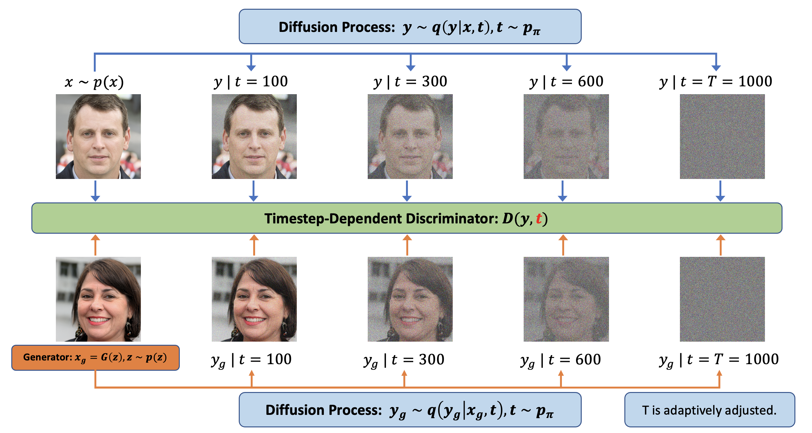
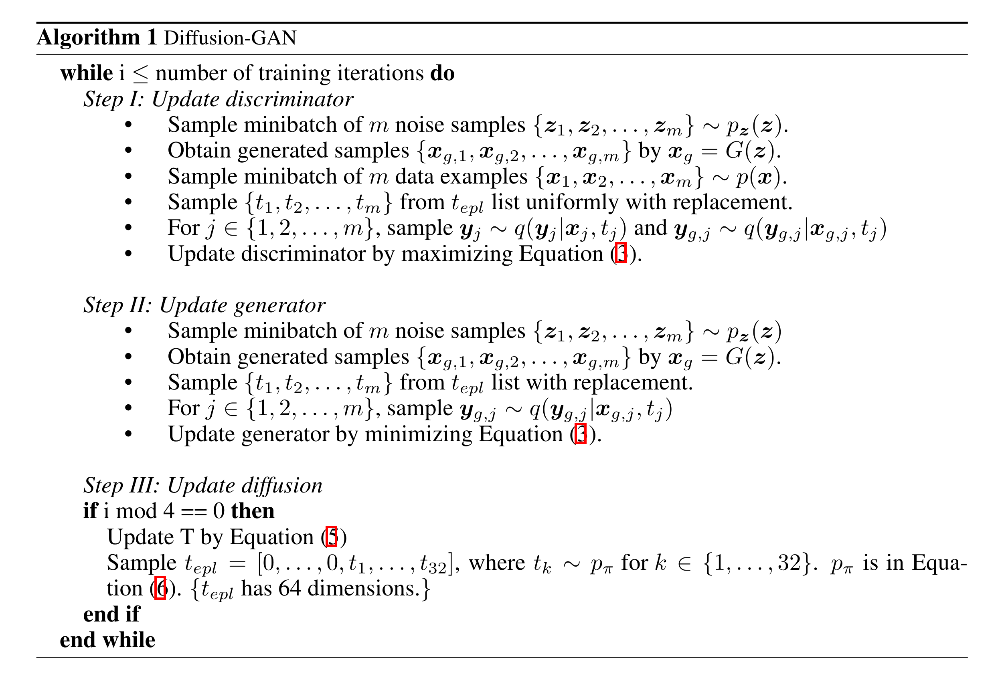
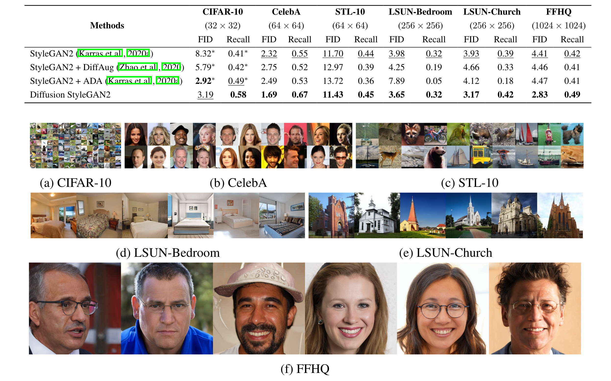

GAN 模型在图像生成领域已经得到广泛研究，但目前还没有提出有效的方法来稳定 GAN 模型的训练。在 GAN 模型中，生成器和鉴别器之间存在非常大的耦合，在生成器训练过程中，鉴别器会随着生成器的训练而改变，从而导致生成器的不稳定。稳定 GAN 训练的一个简单技术是注入实例噪声，即向判别器输入添加噪声，这可以扩大生成器和判别器分布的支持并防止判别器过拟合。
为了注入适当的实例噪声以促进 GAN 训练，作者引入了 Diffusion-GAN，它使用 Diffusion 来生成高斯混合分布式实例噪声。作者还将扩散过程设计为可微的，这意味着模型可以计算输出相对于输入的导数。这允许模型通过扩散过程将梯度从鉴别器传播到生成器，并相应地更新生成器。与直接比较真实图像和生成图像的普通 GAN 不同，Diffusion-GAN 比较它们的噪声版本，这些版本是在基于时间步长的判别器的帮助下，通过扩散步骤上的高斯混合分布采样而获得的。通过从这个分布中采样，第一通过缓解梯度消失问题来稳定训练，第二可以通过创建同一图像的不同噪声版本来增强数据，这可以提高数据效率和生成器的多样性。

目标是通过生成器网络G生成逼真样本 \(x_g\)，该网络将从简单先验分布 \(p(z)\) 中采样的潜在变量 \(z\) 映射到高维数据空间（例如图像）。为了增强生成器的鲁棒性和多样性，通过在生成样本 \(x_g\) 上应用一个逐步添加高斯噪声的扩散过程来注入实例噪声。
文章定义了一个混合分布 \(q(y | x)\)，用于模拟在扩散过程中任意步骤 \(t\) 获得的噪声样本 \(y\) ，其中混合权重 \(\pi_t\) 为每个步骤 \(t\) 分配权重。通过从这个混合分布中采样 \(y\)，可以获得具有不同噪声水平的真实和生成样本的噪声版本。
$$ \boldsymbol{x}\sim p(\boldsymbol{x}),\boldsymbol{y}\sim q(\boldsymbol{y}\mid\boldsymbol{x}), q(\boldsymbol{y}\mid\boldsymbol{x}):=\sum_{t=1}^T\pi_tq(\boldsymbol{y}\mid\boldsymbol{x},t),\\\boldsymbol{x}_g\sim p_g(\boldsymbol{x}),\boldsymbol{y}_g\sim q(\boldsymbol{y}_g\mid\boldsymbol{x}_g), q(\boldsymbol{y}_g\mid\boldsymbol{x}_g):=\sum_{t=1}^T\pi_tq(\boldsymbol{y}_g\mid\boldsymbol{x}_g,t), $$然后，作者使用这种扩散引起的混合分布来训练一个与时间步相关的判别器 D，用于区分真实样本和生成的噪声样本，以及一个将生成的噪声样本的分布与真实噪声样本的分布相匹配的生成器 G。
Diffusion-GAN通过解决一个min-max 目标来训练生成器和判别器:
在任意时间步骤 \(t\) ,目标函数鼓励判别器为受扰动的真实数据分配高概率，为受扰动的生成数据分配低概率。另一方面，生成器尝试生成可以在任何扩散步骤 t 欺骗鉴别器的样本。
与此同时，作者希望判别器 D 具有挑战性的任务，既不能太容易导致数据过度拟合，也不能太难而妨碍学习。当扩散步长 \(t\) 越大，噪声与数据的比率就越高，任务就越困难。作者使用 \(1 - \alpha_t\) 来测量扩散强度，扩散强度随着 \(t\) 的增长而增加。为了控制扩散强度，模型自适应地修改最大步数 \(T\) 。为了实现这个目标，策略是让判别器首先从最简单的样本（即原始数据样本）中学习，然后通过向其提供较大 \(t\) 的样本来逐渐增加难度。为此，我们对 \(T\) 使用自定进度计划，该计划取决于估计判别器与数据过度拟合程度的指标 \(r_d\)：
下面是算法的伪代码流程：


总之，文章提这是一种新颖的 GAN 框架：Diffusion-GAN，它使用具有高斯混合分布的可变长度前向扩散链来生成用于 GAN 训练的实例噪声。这种方法可以实现与模型和领域无关的可微增强，利用扩散的优势，而不需要昂贵的反向扩散链。文章从理论上证明并从经验上证明，Diffusion-GAN 可以防止判别器过度拟合并提供非泄漏增强。作者还证明，Diffusion-GAN 可以生成具有高保真度和多样性的高分辨率逼真图像，根据 FID 和 Recall，在标准基准数据集上优于其相应的最先进的 GAN 基线。